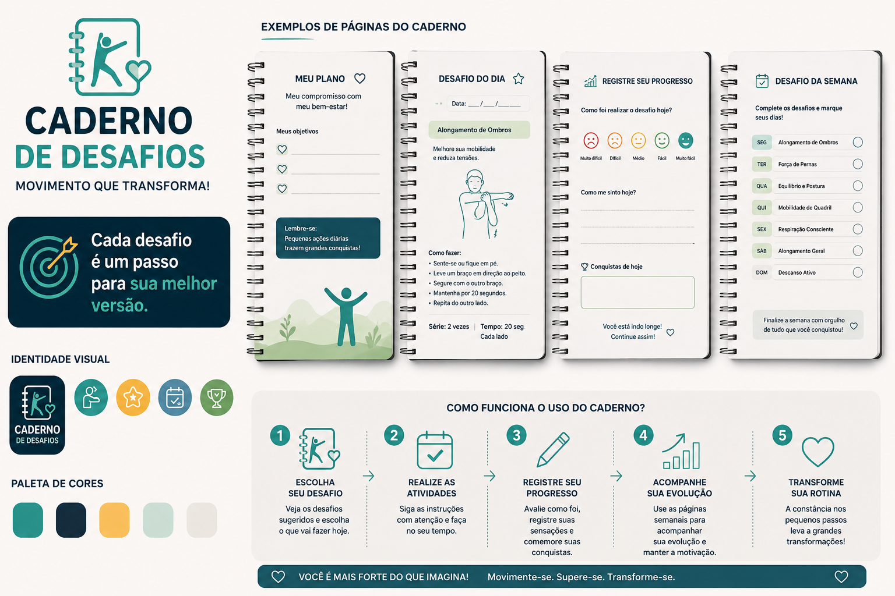

Muitas pessoas que fazem fisioterapia precisam continuar os exercícios em casa, mas nem sempre possuem motivação ou disciplina para realizar as atividades corretamente. Com isso, o tratamento pode ficar mais lento e menos eficiente.
A solução proposta é o Caderno de Desafios, um material com atividades simples e orientadas para pessoas acompanhadas por fisioterapeutas. O objetivo é incentivar a prática dos exercícios em casa de forma mais divertida, organizada e motivadora.
O caderno poderá ser disponibilizado gratuitamente pelo SUS e personalizado de acordo com as necessidades de cada paciente, seguindo a orientação do fisioterapeuta. Assim, cada pessoa terá um acompanhamento mais individualizado. E futuramente haverá a criação de um aplicativo para ajudar ainda mais no auxílio ao paciente
"Cada desafio é um passo para sua melhor versão."